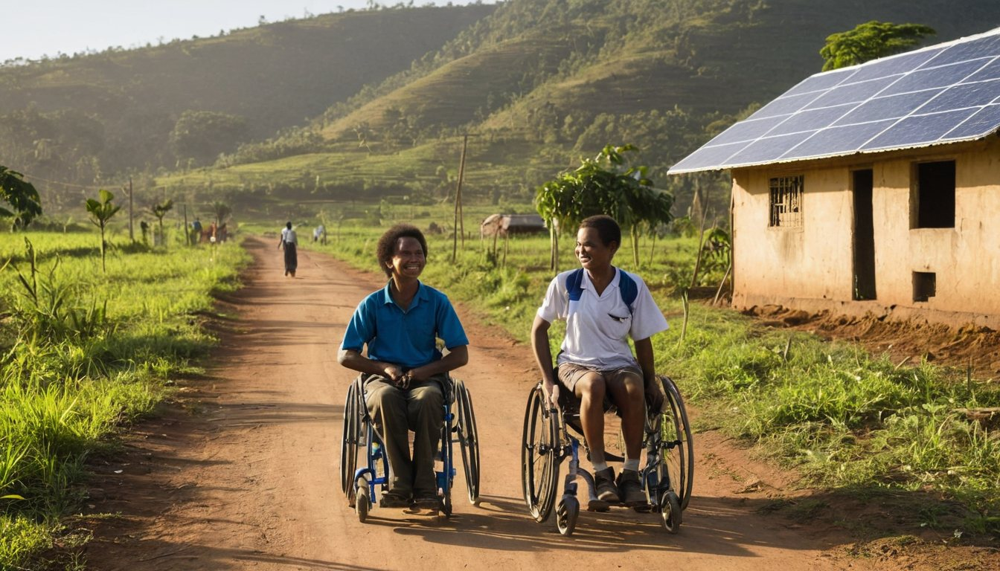
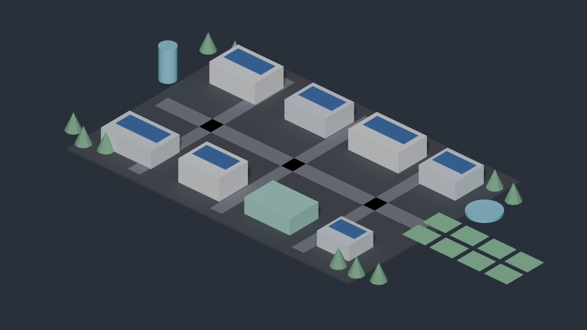
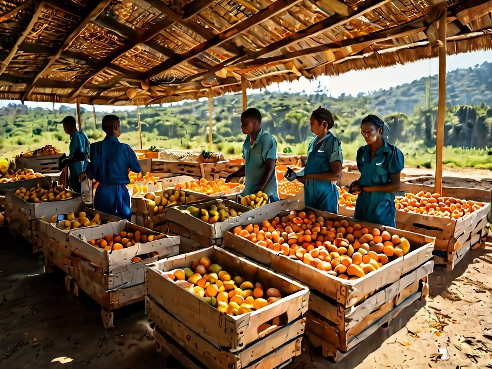
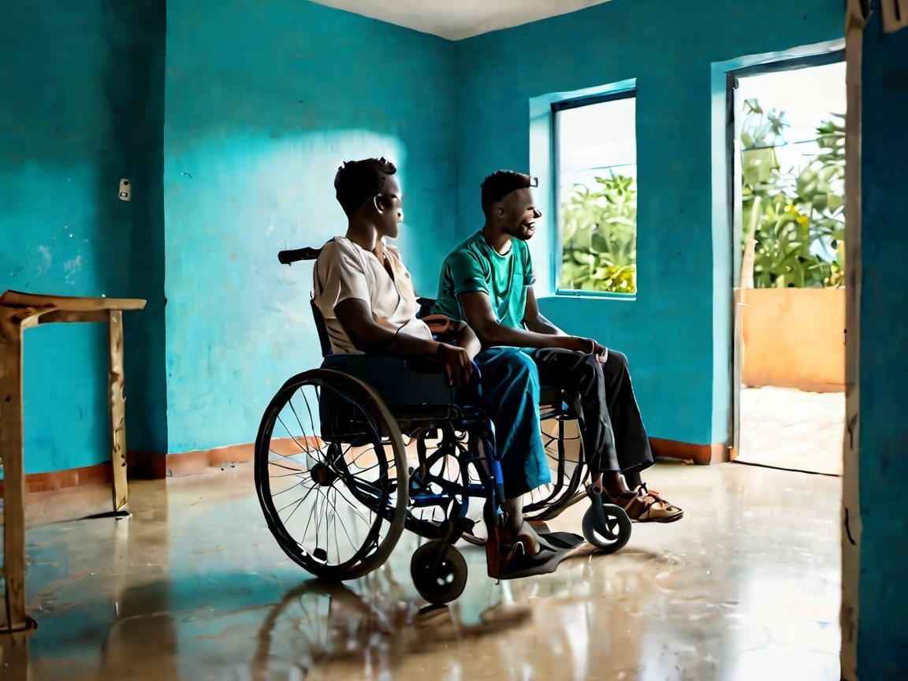
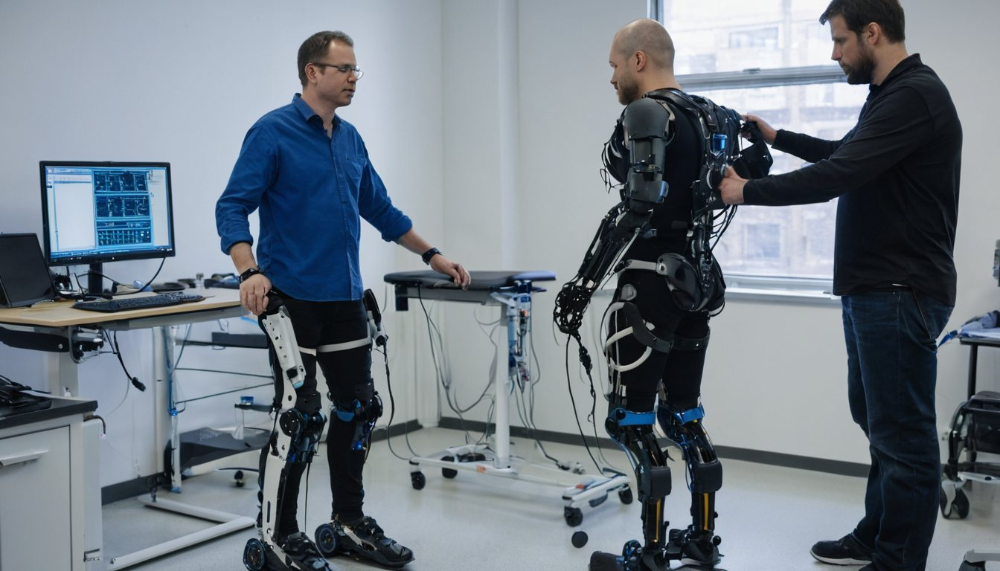
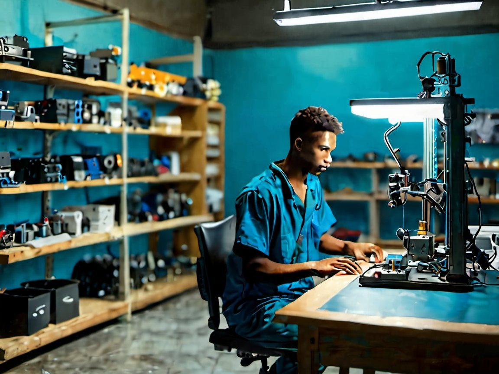
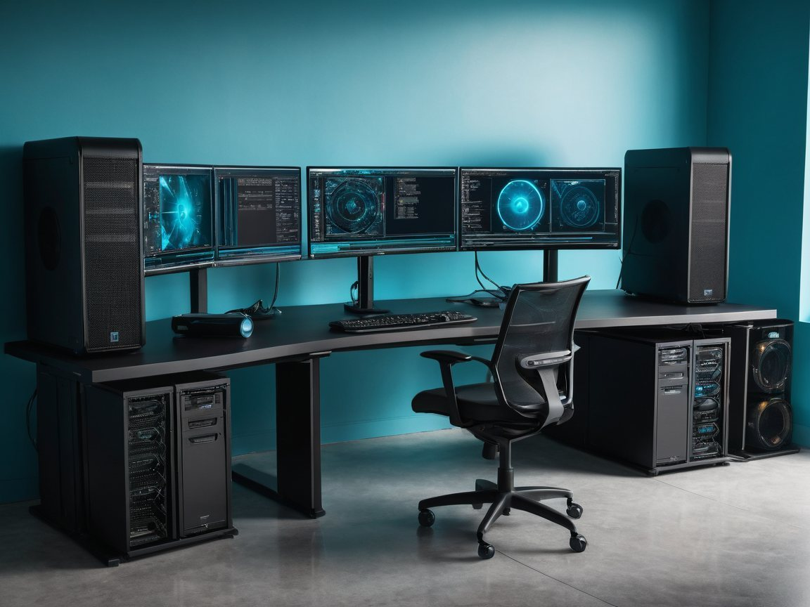
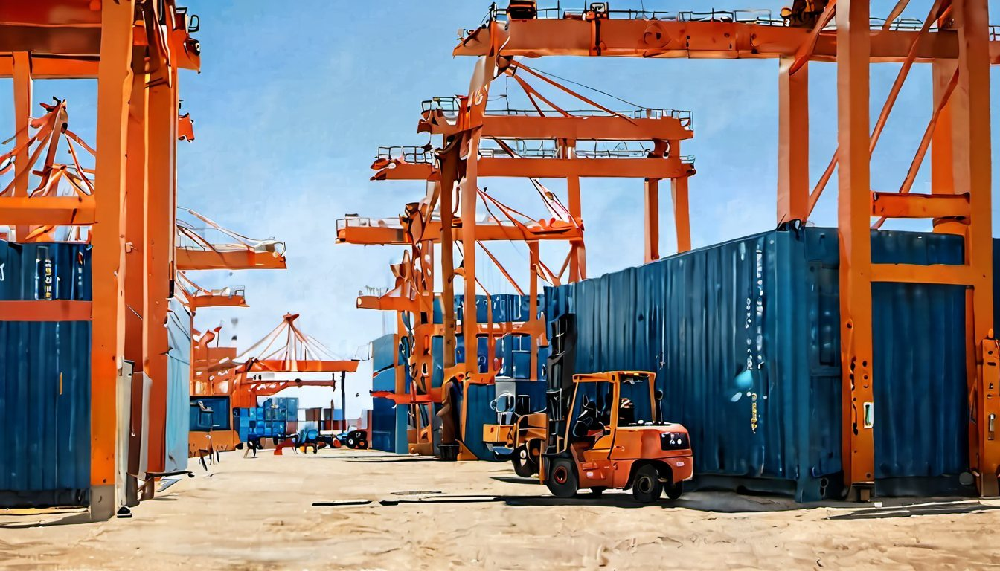
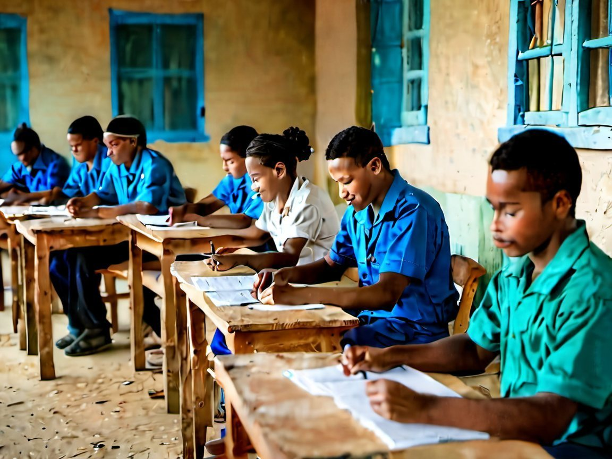
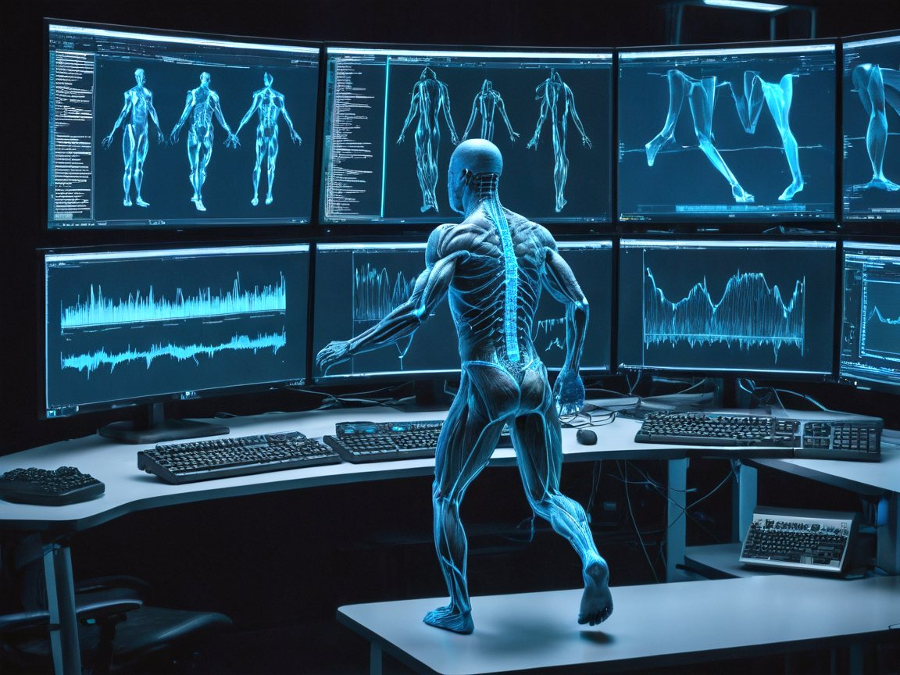

Rééduquer et rendre l'autonomie
Permettre à des personnes atteintes de lésions médullaires ou de handicaps moteurs d'accéder à une rééducation robotisée de pointe, normalement réservée aux cliniques les plus riches.

Une personne plus un métier égale une famille sauvée !
Le modèle
L'Îlot Intégré associe deux approches complémentaires : l'excellence scientifique et la neuro-réhabilitation inspirées des travaux de l'Institut du Dr Miguel Nicolelis, et l'autonomie agricole, artisanale et économique portée par le modèle du Centre Songhaï.
La science permet de développer les solutions techniques. L'agriculture, la formation et la production permettent de construire l'autonomie. Ce qui doit se reproduire d'un territoire à l'autre, ce n'est pas un bâtiment : c'est une méthode, une organisation et un écosystème.

Une équipe locale existe déjà. L'architecte du projet a vécu à Madagascar en 2015, puis en 2024 : le projet ne part pas d'une découverte théorique du territoire, il s'appuie sur une expérience de terrain et des relations établies. L'objectif est de construire avec les acteurs locaux, et non d'imposer un modèle extérieur.

Les enfants en situation de handicap et les femmes sont au cœur du projet : le centre entier est organisé autour de cette priorité. L'accès à l'éducation, à la rééducation, à la formation professionnelle et à l'emploi doit permettre à chacun de devenir progressivement autonome et de participer à la construction de son territoire.

Impact
Ce n'est pas un simple centre de rééducation : c'est un écosystème autonome — énergie, ateliers de maintenance locale, suivi médical et rééducation assistée par IA.
Permettre à des personnes atteintes de lésions médullaires ou de handicaps moteurs d'accéder à une rééducation robotisée de pointe, normalement réservée aux cliniques les plus riches.
Créer un pôle de compétences locales autour de la maintenance robotique, de l'électronique et de l'IA, pour que l'Îlot vive par et pour les talents locaux.
Madagascar est la première pierre. Une fois l'Îlot validé et rodé, son architecture — logicielle, matérielle et humaine — pourra être dupliquée dans d'autres territoires.
Le chemin parcouru — des actes aux réalisations
Un accident. Une vie s'arrête, une autre commence. Ce n'est pas une simple étape : c'est la charnière qui redéfinit toute la trajectoire.
12 juin 2014, Coupe du monde, São Paulo. Un patient paraplégique donne le coup d'envoi avec l'aide d'un exosquelette développé dans le cadre du projet du Dr Miguel Nicolelis. Des millions de personnes voient la scène ; pour l'architecte du projet, elle devient une décision : consacrer sa vie à rendre cette technologie accessible.
L'intelligence artificielle arrive et ouvre un nouveau champ de possibilités. Une conviction prend forme : assembler les compétences, les outils et les ressources nécessaires pour construire RealiaStation, la première infrastructure informatique du projet. La machine de calcul d'abord, le reste ensuite.
Une longue période d'apprentissage autonome touche à son terme. Les connaissances accumulées deviennent une méthode. La méthode devient architecture. L'architecture commence à se transformer en réalisations concrètes.
Le projet entre dans sa première phase opérationnelle : développer le jumeau numérique et les systèmes d'intelligence artificielle destinés à analyser les signaux cérébraux et musculaires. Le parcours personnel rejoint ici la feuille de route technologique.
Les trois phases du projet
Finaliser le jumeau numérique et l'intelligence artificielle destinée à traiter et interpréter les signaux cérébraux et musculaires. Construire l'environnement logiciel, les outils de simulation et les bases techniques du futur Exo-Robot. Cette première phase pose les fondations du projet.
Mobiliser les financements, puis se rendre en Chine pour rencontrer les fournisseurs, identifier les partenaires industriels et travailler directement à la source des équipements.
Objectifs : développer les partenariats industriels · acquérir les équipements de l'Îlot Intégré · concevoir et fabriquer le prototype physique de l'Exo-Robot · équiper le FabLab PMR et les infrastructures du premier site.
Implanter et démarrer le premier modèle d'ONG réplicable à Madagascar. La proximité stratégique de l'Asie facilite les circuits d'approvisionnement. Le premier site devient un terrain d'expérimentation, de formation, de production et de transmission, avant une éventuelle duplication.
Recherche
Finaliser le jumeau numérique et l'intelligence artificielle destinée à traiter et interpréter les signaux cérébraux et musculaires. Construire l'environnement logiciel, les outils de simulation et les bases techniques du futur Exo-Robot. Cette première phase pose les fondations du projet.

Comment financer le projet durablement
Construire un écosystème économique capable de contribuer progressivement au financement de ses propres activités sociales.
Produire localement, puis trier, transformer, déshydrater, stocker et commercialiser. La banque de fruits valorise les récoltes, limite les pertes et garde davantage de valeur sur le territoire.

Un atelier de fabrication et de réparation adapté : impression 3D, prothèses, orthèses, pièces techniques, réparation et adaptation de fauteuils roulants. Le FabLab devient un outil de production, de formation et d'innovation locale.

Une activité numérique complémentaire : contenus, médias, produits numériques, audience, affiliation et boutique. Les revenus du virtuel contribuent à financer le réel.

Un circuit d'approvisionnement entre l'Asie, Madagascar et l'Europe. Les équipements et technologies arrivent dans des conteneurs optimisés ; les circuits de retour valorisent les productions locales et créent des débouchés commerciaux.
Sur place
L'Îlot Intégré ne se limite pas à accueillir des personnes : il leur donne les moyens d'apprendre, de produire et de prendre des responsabilités. Les enfants en situation de handicap bénéficient d'un environnement accessible, d'un accompagnement adapté et de possibilités de formation. Les femmes accèdent à des parcours éducatifs et professionnels qui peuvent les conduire vers l'emploi, l'entrepreneuriat et la gestion des activités locales. L'ensemble du centre devient un lieu de transmission et de coopération.
Des producteurs locaux apportent leurs récoltes. Les équipes assurent le tri, le conditionnement, la transformation et le stockage sous des infrastructures adaptées.
Un atelier équipé d'imprimantes 3D et d'outils de fabrication permet de produire, adapter et réparer des équipements destinés aux personnes en situation de handicap.

Ambition
Le premier Îlot doit démontrer la faisabilité du modèle : inclusion, formation, production locale, innovation et autonomie économique. Chaque activité renforce les autres. Chaque compétence acquise doit pouvoir être transmise. Chaque site prépare le suivant. L'ambition est de construire un réseau de structures autonomes, adaptées aux réalités locales et reliées par une même méthode.
Construire des solutions durables avec les personnes concernées. Projet open source — prototype de recherche, non dispositif médical.
